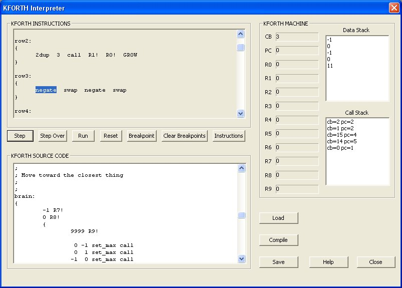
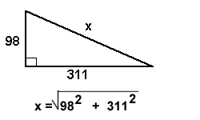

VOLVE 4.0
VOLVE 4.0
The KFORTH Language
Table of Contents:
- Introduction
- Labels
- Registers
- Comments
- Flow Control
- Nested Code Blocks
- Data Types
- Instruction Reference
- Examples
Introduction:
So you want to learn KFORTH, do you? Well lets start with a simple example.
First launch the KFORTH Interpreter from the Evolve program. You'll see this dialog:

Now lets write a program to subtract two years. In the KFORTH SOURCE CODE pane enter the following KFORTH program:
{ 2006 1968 - }
|
All KFORTH instructions must be enclosed within curly braces. This is called a "code block". Code blocks are assigned numbers starting with 0. Inside of the curly braces goes "the code". This consists of numbers and instructions (using in postfix notation).
Now press the [Compile] button. And this is what you will see in the upper pane:
main:
{
2006 1968 -
}
|
The compiled version looks very similar to what we typed it. The first thing to note is the label main: was added in front our code block. In KFORTH the first code block (code block 0) is where program execution starts. That is why the disassmbler inserted the label main:.
Now click on [RUN]. The answer '38' will appear in the data stack pane. You can also single-step through this example. To single step, first press [Reset].
Lets add another code block to this example.

Your neighbor is building a BBQ, to measure for the foundation he needs to know what 'x' is (I know, lame example, but I'm hungry right now). You want to help him so he'll invite you over for BBQ. You realize that this is a perfect job for KFORTH! We will add a new code block to our example, which when executed will compute 'x':
Here, type this:
{ 2006 1968 - }
{ 98 dup * 311 dup * + sqrt }
|
When you compile this program, the disassembly will be shown as:
main:
{
2006 1968 -
}
row1:
{
98 dup * 311 dup * + sqrt
}
|
The disassembler gives every code block a label. The first one, as we already saw is called main: subsequent code blocks are labeled row1, row2, row3 and so on...
Now click on [Run]. Whoooa! What the fuck? The data stack only shows the same value '38'? What's wrong?
The problem is KFORTH automatically executes code block 0, but all other code blocks must be explictly called, using the call instruction.
Let's try this again.... Now we will add '1 call' to the end of the first code block, like so:
{ 2006 1968 - 1 call }
{ 98 dup * 311 dup * + sqrt }
|
Now click on [Compile] and then [Run].
Hopefully, when the program terminates there are two items on the stack. '326' and '38'. The '326' is the answer to our "find x?" problem. Since KFORTH only uses integers the answer has been rounded to the nearest whole number.
This example shows how code blocks are treated as executable functions. The call instructions pops a number from the top of the data stack and treats it as a code block number, and calls that code block.
When humans write KFORTH they should use labels, so here is the same program with labels added:
main:
{ 2006 1968 - findx call }
findx:
{ 98 dup * 311 dup * + sqrt }
|
When your [Compile] this, your labels are lost and the disassembler picks labels like: "main, row1, row2, row3, ...". Anyway, here is what you'll see in the disassembly pane:
main:
{
2006 1968 - 1 call
}
row1:
{
98 dup * 311 dup * + sqrt
}
|
Also notice the label before the call instruction is 1 not row1. This is because the disassembler cannot reliably regenerate labels INSIDE of code blocks (I don't want to go into the reasons why, but you could calculate the code block number rather than hard code a value).
Labels
A label is any text followed by a colon ':'. A label can consist of any characters except: whitespace, colon ':', semi-colon ';' , or curly braces '{', '}'. Also, a label cannot clash with the name of an existing instruction.To define a label simply follow it by a colon (without spaces). The value of the label is the next code block number to be assigned (code block numbers are assigned startig at 0 and then incrementing by 1 for each new code block).
To use a label, just enter its name (do not use colon). The compiler will convert this label reference to the code block number.
Case Insensitive
Instructions and labels are case insensitive. So "MAKE-SPORE" is the same as "Make-Spore".
Registers
The KFORTH computing model includes ten registers R0 through R9. These can be used to store/retrieve temporary values. For example,
main:
{ 2006 1968 - R1!
findx call R5!
R1 R5 + R9!
}
findx:
{
98 dup * 311 dup * + sqrt
}
|
This is the same example as before, but we have added 'R5!' and 'R1!'. These instructions take the value on top of the data stack and stores it into the indicated register.
The line R1 R5 + R9! fetches the value of R1 and R5 and adds these values and then writes the result to register R9.
Registers are not used by any KFORTH instructions, so they can be managed and used by the user without worrying about conflicts.
Comments
Use the semi-colon ; to insert a comment into a KFORTH program. The rest of the line after the semi-colon is ignored.
; my first KFORTH program
main:
{
2006 1968 - R1! ; compute difference between 2006 and 1968
findx call R5! ; call the findx routine and store in result in R5.
R1 R5 + R9!
}
; my first KFORTH subroutine
findx:
{
98 dup * 311 dup * + sqrt
}
|
Stack Underflow
It can be expected that a mutated KFORTH program would attempt instructions without having enough data on the data stack. How does KFORTH handle this?KFORTH's policy for stack underflow is to treat the operation as a NO-OP. Meaning the program just continues to the next instruction without removing anything from the stack.
For example, this code calls the plus (+) instruction but only 1 data item is on the stack.
main:
{
200 + 3 *
}
|
The '+' operation needs two values on the stack. Since this is not the case, the stack underflow policy is to simply proceed to the next instruction. When the '*' operation is executed it finds two values on the data stack, so it is able to perform its job (computes 600, replacing 200 and 3 on the data stack).
Undefined Functions
In addition to stack underflow, sometimes the value to an instruction (a function) are not defined. For example division by 0 and trying to take the square root of a negative number. Therefore, div mod, and /mod will act as NO-OP instructions when the second operand is zero. And when the argument to sqrt is negative the instruction leaves the stack unchanged.
Flow Control
We already know about the call instruction, which transfers control to a new code block. What else can we do? KFORTH includes the following instructions for flow control:
- call - call a code block
- if - call a code block IF true
- ifelse - call code block
- ?loop - jump to beginning of code block if true
- ?exit - jump to end of code block if true
call
We have already seen this instruction at work. It's the unconditional form of subroutine call. Below we explore if and ifelse which are conditional subroutine call instructions.
You may be wondering what "call" does with a bogus code block number? For example, "-900 call", or "555 call". When call instruction (and if, ifelse) is used with a bogus code block number, it removes the values from the stack, as if this were a normal instruction, but it won't call any code block. Conceptually, we can think of a KFORTH program as having empty rows for every possible integer (except the ones that have been defined).
main:
{
5000 call
}
row1: { }
row2: { }
row3: { }
row4: { }
row5: { }
row6: { }
...
row9999999: { }
|
if
Here's an example of using the IF instruction.
main:
{
521 R1!
R1 dup 500 >= blah if
}
blah:
{
500 -
}
|
This code checks if R1 is greater than 500 and if true, calls the subroutine blah. Blah will subtract 500. The 'dup' instruction creates a 2nd copy of R1 on the data stack.
Nested Code Blocks:
There is another human friendly way to write this same thing. It is called nested code blocks. Here is how to re-write this example,
main:
{
521 R1!
R1 dup 500 >= { 500 - } if
}
|
We nested the code block that use to be blah, directly into main. If you [Compile], you'll notice that the nesting is removed. This reveals how the nesting actually works. Nesting code blocks is just for human convienience.
When compiled it maps to the orginal version we wrote that used the code block blah, see:
main:
{
521 R1! R1 dup 500 >= 1 if
}
row1:
{
500 -
}
|
Nesting can be of unlimited depth. But, again this nesting is a lexical feature, and does not imply and special powers in the KFORTH language. It is simply a way to make writing KFORTH programs simpler.
ifelse
This instruction calls one of two code blocks depening on if the condition is true or false.
main:
{
499 R1!
R1 dup 500 >=
{ 500 - R1! }
{ 2 / R1! } ifelse
}
|
First notice that the KFORTH compiler is free-format, allowing you to space your KFORTH programs any way which you desire.
This is what the code will be converted into by the compiler:
main:
{
499 R1! R1 dup 500 >= 1 2 ifelse
}
row1:
{
500 - R1!
}
row2:
{
2 / R1!
}
|
Which does the same as this C code:
/* C code, not KFORTH */
void main()
{
int R1;
R1 = 499;
if( R1 >= 500 ) {
R1 = R1 - 500;
} else {
R1 = R1 / 2;
}
}
|
The ifelse instruction requires three arguments to be on the data stack. If this is not the case, then the stack underflow policy is to just treat the ifelse as a no-op.
?loop

As this awsome diagram illustrates, the ?loop instruction loops! It is a form of controlled goto. It does not do a subroutine call, instead we simply branch back to the beginning of the current code block (if the value on top of the stack is non-zero). Otherwise we continue to the next instruction.
main:
{
{ ...stuff... } call 1 ?loop
}
|
The instructions 1 ?loop causes execution to return to the start of the code block, therefore this will loop forever.
?exit

This diagram shows how the exit instruction works. The ?exit instruction conditionally exits (branches to the end of the code block) the current code block. If the top of the data stack is non-zero then we jump to the end of the code-block. Otherwise we continue to the next instruction. As with ?loop, this instruction does not involve any subroutine calling. It is a branch.
These are the only branching instructions in KFORTH.
That's it. There are no strings, booleans, arrays, etc...
a 64-bit number is quite large. Here is the min/max range of this data type:
Only decimal notation is accepted. Numeric literals may be preceeded by a minus (-) sign to
indicate a negative value.
Here are all the core KFORTH instructions. (the instructions that
control organisms/cells are listed here).
The USAGE column uses forth notation to document these instructions.
This notation attempts to show the data stack before and after the call
to the instruction. For example,
In this example, the instruction takes three arguments a, b, and c. After
the instruction executes those three arguments are replaced with a single value n
(which is the result).
See an example of Towers of Hanoi in KFORTH.
DATA TYPES
KFORTH has the most elaborate and rich data types in the whole history of computer
languages!!!! Bwhahahahaha! Just kidding. KFORTH only has one data type: a 64-bit signed integer.
-9,223,372,036,854,775,808 to +9,223,372,036,854,775,807
KFORTH INSTRUCTION REFERENCE
(a b c -- n )
The stuff before -- is the state of the data stack before calling the
instruction. And the stuff after -- is state of the data stack AFTER this
instruction finishes.
INSTRUCTION
USAGE
DESCRIPTION
call ( code-block -- )
Remove top item from the stack. This value
is a 'code-block' number which will be called.
If code block is invalid, the request is ignored.
In disassembly row123 is code-block 123, and so on.
if ( expr code-block -- )
Removes two items from top of stack. If expr is
non-zero then code-block is called. Otherwise, execution
continues on the next instruction.
ifelse ( expr true-block false-block -- )
removes three items from top of stack. If expr is
non-zero then call true-block, else call false-block.
?loop ( n -- )
Remove 1 item from the stack. If value is non-zero
jump to the start of the current code block. Otherwise
continue with the next instruction after '?loop'.
?exit ( n -- )
Remove 1 item from the stack. If non-zero then
exit current code block.
pop ( n -- )
Remove item from stack and discard it.
dup ( a -- a a )
Duplicate item on top of the stack.
swap ( a b -- b a )
Swap top two elements on the stack.
over ( a b -- a b a )
Copy second item from the stack.
rot ( a b c -- b c a )
Rotate third item to top.
pick ( ... v3 v2 v1 n -- ... v3 v2 v1 vn )
Grab arbitrary item on the stack. n is the item to grab.
n numbering begins with 1.
?dup ( n -- n n | 0 )
Duplicate top element if non-zero.
-rot ( a b c -- c a b )
Rotate top to third position.
2swap ( a b c d -- c d a b )
Swap pairs.
2over ( a b c d -- a b c d a b)
Leapfrog pair.
2dup ( a b -- a b a b )
Dupicate pair.
2pop ( a b -- )
Remove pair.
nip ( a b -- b )
Remove 2nd item from stack.
tuck ( a b -- b a b)
Copy top item to third position.
1+ ( n -- n+1 )
Add 1 to the item on top of the stack.
1- ( n -- n-1 )
Subtract 1 from item on top of the stack.
2+ ( n -- n+2 )
Add 2 to item on top of the stack
2- ( n -- n-2 )
Subtract 2 from the item on top of the stack.
2/ ( n -- n/2 )
Half value.
2* ( n -- n*2 )
Double value.
abs ( n -- abs(n) )
Absolute value of n.
sqrt ( n -- sqrt(n) )
Square root. n must be positive.
+ ( a b -- a+b )
Addition top to elements on stack.
- ( a b -- a-b )
Subtraction first item on stack from 2nd.
* ( a b -- a*b )
Multiply.
/ ( a b -- a/b )
Divide.
mod ( a b -- a%b )
Modulos.
/mod ( a b -- a%b a/b )
Divide and modulos.
negate ( n -- -n )
negate top item on stack.
2negate ( a b -- -a -b )
negate top two items on stack. (useful for computing a "flee" direction
to evade something).
= ( a b -- EQ(a,b) )
Equal to.
<> ( a b -- NE(a,b) )
Not equal to.
< ( a b -- LT(a,b) )
Less than.
> ( a b -- GT(a,b) )
Greater than.
<= ( a b -- LE(a,b) )
Less than or equal to.
>= ( a b -- GE(a,b) )
Greater than or equal to.
0= ( n -- EQ(n,0) )
Is element on top of the stack equal to 0?
or ( a b -- a|b )
Bitwise OR. Can be used as a logical OR operator too, because
KFORTH boolean operators return 1 and 0.
and ( a b -- a&b )
Bitwise AND. Can be used a a logical AND operator too, because
KFORTH boolean operators return 1 and 0.
not ( n -- !n )
Logical NOT.
invert ( n -- ~n )
Invert bits (Bitwise NOT).
xor ( a b -- a^b )
XOR function.
min ( a b -- min(a,b) )
Minimum value.
max ( a b -- max(a,b) )
Remove 2 items from stack and replace with
maximum value.
CB ( -- CB )
Pushes the current code block number on the data stack. Can be used
to implement "relative" code block addressing.
Rn ( n -- Rn )
Pushes register Rn on the data stack. If
n is not 0-9 the request is ignored.
R0 ( -- R0 )
Pushes register R0 on the data stack
R1 ( -- R1 )
Pushes register R1 on the data stack
R2 ( -- R2 )
Pushes register R2 on the data stack
R3 ( -- R3 )
Pushes register R3 on the data stack
R4 ( -- R4 )
Pushes register R4 on the data stack
R5 ( -- R5 )
Pushes register R5 on the data stack
R6 ( -- R6 )
Pushes register R6 on the data stack
R7 ( -- R7 )
Pushes register R7 on the data stack
R8 ( -- R8 )
Pushes register R8 on the data stack
R9 ( -- R9 )
Pushes register R9 on the data stack
Rn! ( val n -- )
Removes 2 items from the data stack
'n' is the register and 'val' is the value to
store into register Rn.
If 'n' is not 0-9 then this instruction ignores the request.
R0! ( val -- )
Removes 1 item 'val' from the data stack
and stores 'val' into register R0
R1! ( val -- )
Removes 1 item 'val' from the data stack
and stores 'val' into register R1
R2! ( val -- )
Removes 1 item 'val' from the data stack
and stores 'val' into register R2
R3! ( val -- )
Removes 1 item 'val' from the data stack
and stores 'val' into register R3
R4! ( val -- )
Removes 1 item 'val' from the data stack
and stores 'val' into register R4
R5! ( val -- )
Removes 1 item 'val' from the data stack
and stores 'val' into register R5
R6! ( val -- )
Removes 1 item 'val' from the data stack
and stores 'val' into register R6
R7! ( val -- )
Removes 1 item 'val' from the data stack
and stores 'val' into register R7
R8! ( val -- )
Removes 1 item 'val' from the data stack
and stores 'val' into register R8
R9! ( val -- )
Removes 1 item 'val' from the data stack
and stores 'val' into register R9
SIGN ( n -- SIGN(n) )
Compute sign of 'n'. If n is negative, SIGN will return -1. if
n is greater than 0, SIGN will return 1. If n is 0, SIGN will
return 0.
PACK2 ( a b -- n )
Combine two 32-bit integers 'a' and 'b' into a single value 'n'.
UNPACK2 ( n -- a b )
Extract two 32-bit integers 'a' and 'b' from a single value 'n'.
PACK4 ( a b c d -- n )
Combine four 16-bit integers 'a', 'b', 'c', and 'd' into a single value 'n'.
UNPACK4 ( n -- a b c d )
Extract four 16-bit integers 'a', 'b', 'c', and 'd' from a single value 'n'.
Example Code 1
main:
{
3 cube call
99 cube call
; this line computes (9^3)^3
9 cube call cube call
}
;
; cube the value on top of the stack
;
cube:
{
dup dup * *
}
Example Code 2
main:
{
20 fact call
}
;
; Recursive factorial algorithm:
; ( n -- factorial(n) )
;
fact:
{
dup 0 =
{ pop 1 }
{ dup 1 - fact call * } ifelse
}
Example Code 3
;
; compute: (R0 * 8 / R3 + R1) * R2
;
; Where:
; R0 = 10
; R1 = 20
; R2 = 5
; R3 = 2
;
main:
{
10 R0!
20 R1!
5 R2!
2 R3!
R0 8 * R3 / R1 + R2 *
}
Example Code 4
main:
{
20 fact call
}
;
; non-recursive factorial algorithm:
; ( n -- factorial(n) )
;
fact:
{
1 swap
{
dup 0 = ?exit
dup 1- -rot
* swap
1 ?loop
} call
pop
}
Example Code 5
;
; use code blocks as a form of array/table lookup.
; This will fetch the pair (5, 6) from the "table":
;
main:
{
mytable 3 + call
}
mytable:
{ 2 3 } ; index 0
{ 1 1 } ; index 1
{ 3 4 } ; index 2
{ 5 6 } ; index 3
{ 10 5 } ; index 4
Example Code 6
;
; Code blocks can also be used as a cheap
; way to implement named contants.
; (see PI).
;
main: {
ugly call 100 511 897 + + +
}
ugly: {
987 PI call +
}
; a constant, as a code block
PI: { 3 }
Example Code 7
;
; look_n_fertilize
; ----------------
;
; USAGE: (x y e -- r)
;
; DESCRIPTION:
; This subroutine looks for a spore in direction (x, y).
; If a spore is found, then ferilize it with a second
; spore with energy 'e'
;
; RETURNS
; 0 is no spore found, or could not create a spore
; 1 is returned on success
;
; HOW TO CALL:
; 1 0 5 look_n_fertilize call
;
look_n_fertilize:
{
-rot 2dup look-spore
{ rot make-spore } { 2pop pop 0 } ifelse
}
Example Code 8
main:
{
-100 19 normalize call
-40 -234 normalize call
}
;
; ( x y -- NORM(x) NORM(y) )
;
; normalized a pair of values:
;
normalize:
{
norm1 call swap norm1 call swap
}
;
; (n -- NORM(n))
;
; Compute this function:
;
; n < 0 NORM(n) = -1
; n = 0 NORM(n) = 0
; n > 0 NORM(n) = 1
;
norm1:
{
dup 0 > { pop 1 } { 0= { 0 } { -1 } ifelse } ifelse
}
Example Code 9